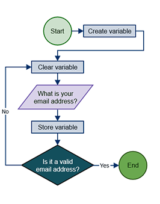
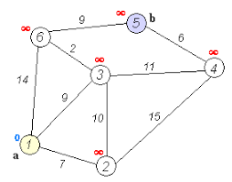
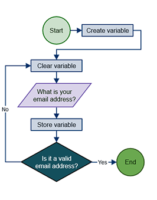

Programming Languages and Their Uses
Programmers use programming languages to communicate with computers. Many different languages exist, and each one has its own unique features, though they all share some similarities. Because each language is different, each may be best suited for a certain purpose or purposes within certain industries. Some programming languages are used to create programs to solve problems or interpret data. Other programming languages are more suitable for making create software or apps that entertain. With a strong need for unique and diverse programming languages, it is virtually impossible to create a single universal programming language that meets all needs. Programming languages are often revised and even combined with other languages over time, evolving to meet our changing technological needs.
Programming Languages
-
Python is an open-source programming language used by software engineers and back-end Web developers. Python is well-suited for scientific computing, and it is relatively simple to learn.
-
Java is prevalent in Web-based development, and it was created in 1995. Many companies in the health sciences, education, and finance industries use Java. Java enables the downloading of applets from websites, which enable browsers to perform additional functions.
-
Ruby is an open-source scripting language that coders can use independently or in conjunction with Ruby on Rails. NASA uses Ruby in its work with simulations.
-
HTML is used extensively in Web development. HTML is the code that serves as the foundation of Web pages, allowing people to create and structure electronic documents for viewing online.
-
JavaScript is used by Web developers and software engineers to manipulate page elements to make them more engaging. JavaScript enhances HTML, and it is embedded in most Internet browsers.
-
C is a middle-level programming language used by software developers and systems analysts. Programmers use C to create applications that integrate with operating systems.
-
C++, developed in 1983, is another middle-level programming language and works as an extension of C. Programmers use C++ to create games, graphics, and office applications.
-
C# is a programming language used by software engineers who create applications designed to work with Windows operating systems. C# shares similarities with Java.
-
Objective-C is an object-oriented language used by mobile developers and software engineers. Developers creating iOS and OS X utilities often use Objective-C.
-
PHP was released to the public in 1995. Developers use PHP as an open-source language to create dynamic Web pages. Widely used platforms such as WordPress and Drupal work cohesively with PHP.
- SQL enables programmers to create, read, update, and delete information in a database. Companies use SQL to gather data.
-
Apple uses the Swift programming language to create and maintain iOS and OS X applications. Swift 2 is a secondary open-source programming language more recently released by Apple.
Algorithm example

One of the simplest algorithms is to find the largest number in a list of numbers of random order. Finding the solution requires looking at every number in the list. From this follows a simple algorithm, which can be stated in a high-level description in English prose, as:
High-level description:
-
If there are no numbers in the set then there is no highest number.
-
Assume the first number in the set is the largest number in the set.
-
For each remaining number in the set: if this number is larger than the current largest number, consider this number to be the largest number in the set.
-
When there are no numbers left in the set to iterate over, consider the current largest number to be the largest number of the set.
Data Structure example

There are numerous types of data structures, generally built upon simpler primitive data type
-
An array is a number of elements in a specific order, typically all of the same type (depending on the language, individual elements may either all be forced to be the same type, or may be of almost any type). Elements are accessed using an integer index to specify which element is required. Typical implementations allocate contiguous memory words for the elements of arrays (but this is not always a necessity). Arrays may be fixed-length or resizable.
-
A linked list (also just called list) is a linear collection of data elements of any type, called nodes, where each node has itself a value, and points to the next node in the linked list. The principal advantage of a linked list over an array, is that values can always be efficiently inserted and removed without relocating the rest of the list. Certain other operations, such as random access to a certain element, are however slower on lists than on arrays.
-
A record (also called tuple or struct) is an aggregate data structure. A record is a value that contains other values, typically in fixed number and sequence and typically indexed by names. The elements of records are usually called fields or members.
-
A union is a data structure that specifies which of a number of permitted primitive types may be stored in its instances, e.g. float or long integer. Contrast with a record, which could be defined to contain a float and an integer; whereas in a union, there is only one value at a time. Enough space is allocated to contain the widest member datatype.
-
A tagged union (also called variant, variant record, discriminated union, or disjoint union) contains an additional field indicating its current type, for enhanced type safety.
-
An object is a data structure that contains data fields, like a record does, as well as various methods which operate on the data contents. An object is an in-memory instance of a class from a taxonomy. In the context of object-oriented programming, records are known as plain old data structures to distinguish them from objects
Algorithm example
High-level description:
- If there are no numbers in the set then there is no highest number.
- Assume the first number in the set is the largest number in the set.
- For each remaining number in the set: if this number is larger than the current largest number, consider this number to be the largest number in the set.
- When there are no numbers left in the set to iterate over, consider the current largest number to be the largest number of the set.
Data Structure example
- An array is a number of elements in a specific order, typically all of the same type (depending on the language, individual elements may either all be forced to be the same type, or may be of almost any type). Elements are accessed using an integer index to specify which element is required. Typical implementations allocate contiguous memory words for the elements of arrays (but this is not always a necessity). Arrays may be fixed-length or resizable.
- A linked list (also just called list) is a linear collection of data elements of any type, called nodes, where each node has itself a value, and points to the next node in the linked list. The principal advantage of a linked list over an array, is that values can always be efficiently inserted and removed without relocating the rest of the list. Certain other operations, such as random access to a certain element, are however slower on lists than on arrays.
- A record (also called tuple or struct) is an aggregate data structure. A record is a value that contains other values, typically in fixed number and sequence and typically indexed by names. The elements of records are usually called fields or members.
- A union is a data structure that specifies which of a number of permitted primitive types may be stored in its instances, e.g. float or long integer. Contrast with a record, which could be defined to contain a float and an integer; whereas in a union, there is only one value at a time. Enough space is allocated to contain the widest member datatype.
- A tagged union (also called variant, variant record, discriminated union, or disjoint union) contains an additional field indicating its current type, for enhanced type safety.
- An object is a data structure that contains data fields, like a record does, as well as various methods which operate on the data contents. An object is an in-memory instance of a class from a taxonomy. In the context of object-oriented programming, records are known as plain old data structures to distinguish them from objects